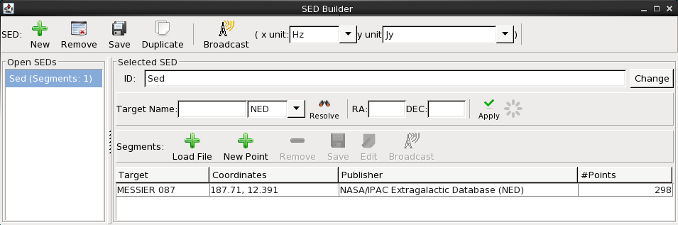
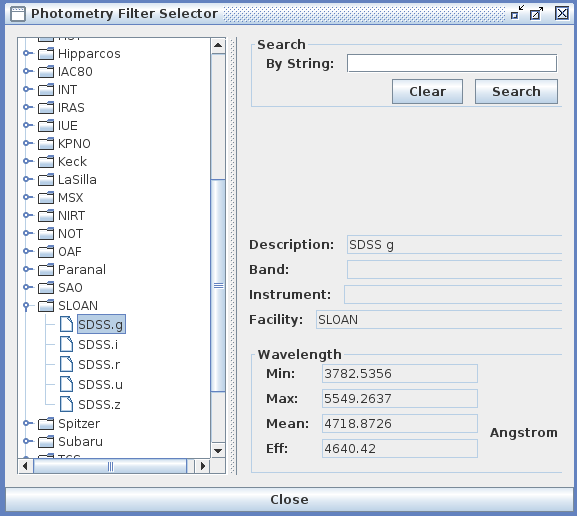
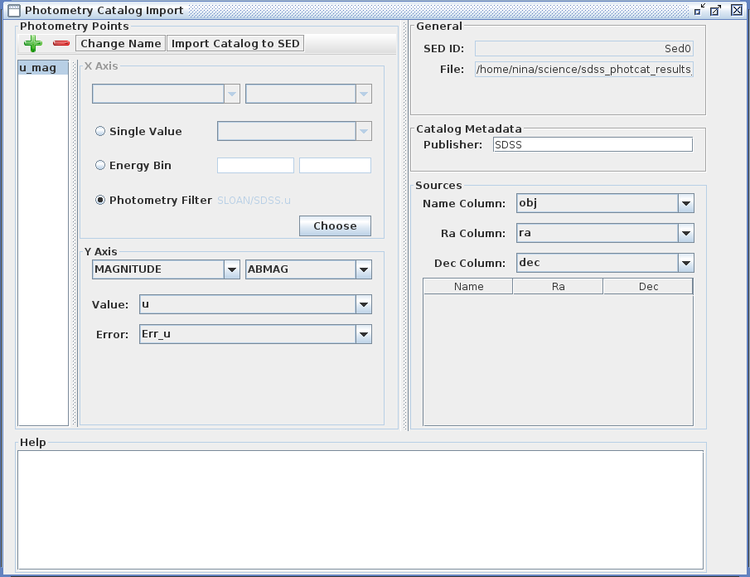
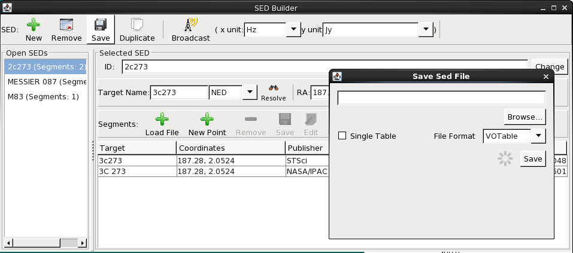
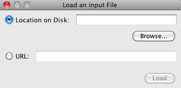
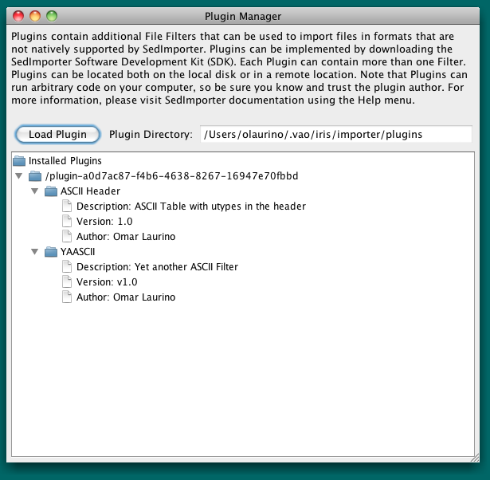

As one of the primary functions of Iris is building multi-segment SEDs, it is expected that users will need to input SED data in various file formats, and have access to a robust interface for constructing and managing the various pieces of the aggregate SED. To this end, Iris is equipped with the SED Builder tool. This thread describes the various features of the SED Builder which allow the user to build aggregate SEDs, convert data from non-native formats, and generally manage all loaded SED data in the Iris session.
Last Update: 07 May 2015 - updated for Iris 2.1 beta. Added ASCII Table as an output format for SEDs. Updated Setup File example.
The SED Builder interface in Iris is the place where all loaded SED data is managed, where multi-segment SEDs are constructed, and where SED data input in a non-native format is converted for display in the Iris Visualizer. One or multiple loaded segments and/or photometric points may be displayed and analyzed simultaneously, or separately, allowing you to maintain completely independent data analysis sessions.

Whenever data is loaded or imported into Iris as demonstrated in the “Loading SED Data into Iris” section of the [Iris How-to Guide][guide], an entry for that SED is automatically added to the SED Builder window. At this point, you have the option to continue adding segments/points to this SED, or, you can create a new entry representing a separate SED. Whichever SED you select in the SED Builder window is the one that will display in the Iris Visualizer, giving you the flexibility to jump back-and-forth between separate analysis sessions.
When you load SED data into Iris in a format that is not natively supported by the application, the SED Builder will prompt you to enter a few key pieces of information about the data format so that it is able to convert it into a form which is recognized by VO tools. The resulting configuration information may be saved to file in order to be used later in the non-interactive command-line interface of the tool (e.g., to quickly convert a batch of files), for the advanced user. If you happen to load a file into Iris that is already in the supported IVOA-standard FITS or VOTable format, this extra step of entering configuration information is unnecessary.
The file formats supported by Iris, listed below with brief descriptions, are those that are supported by common VO tools. For each, a simple, generic assumption is made: data is arranged in a tabular format, with all rows having the same number of columns, and possibly with a header where metadata is stored. The way in which both data and metadata are stored depends on the specific format.
For detailed information on these formats, refer to the [Supported File Formats][importer_files] page.
ASCII - text file with columns separated by spaces and/or tabs
CSV - text file with columns separated by commas (the first row may contain the name of the columns)
FITS - consists of a series of Header Data Units (HDUs), each containing two components: an ASCII text header and the binary data. The header contains a series of header keywords that describe the data in a particular HDU and the data component immediately follows the header.
VOTABLE - (text or binary) XML standard for the interchange of data represented as a set of tables. Consists of an unordered set of rows, each of a uniform structure, as specified in the table metadata. Each row in a table is a sequence of table cells, and each of these contains either a primitive data type, or an array of such primitives.
IPAC - a custom bar-separated text format by IPAC
TST - Tab Separated Table (comments are ignored, metadata is in key, value pairs)
| [Back to top] |
The main mode of interaction with the SED Builder is through the Iris Graphical User Interface (GUI), but a non-interactive, command-line interface (CLI) is also available for advanced users wishing to convert their unsupported data formats in this mode. (In order to use the SED Builder CLI, what is referred to in this document as a ‘setup’ file is required input, along with the file to be converted. The setup file stores the configuration information needed to convert SED data written in an unsupported format into one of the supported FITS or VOTable formats; it may be created by using the SED Builder in interactive mode, first.)
To access the SED Builder in the mainstream way, simply start Iris from the Unix command line, as shown below, and then click the “Load File” option on the Iris desktop; this will open the SED Builder window and the window for loading data.
% /bin/bash # for C-shell users ONLY $ source activate iris $ iris &
Then, according to the instructions in the “Loading Data into Iris” section of the [How-to Guide][guide.html], load your first (or only) spectrum or catalog of photometric points into Iris. Data may be loaded from a file on your local disk; an http or ftp URL address (internet connection required); from the NED SED service (internet connection required); or from a remote SAMP-connected application. The “Spectrum/SED” option should be used to load a file which contains at least one column for the spectral coordinate (energy, wavelength, frequency) and one column for the flux coordinate (flux, flux density, or magnitude), for a single astronomical source. A “photometry catalog” file refers to one in which each row contains an arbitrary number of photometric points for a single astronomical source (the file may contain multiple rows representing multiple astronomical sources). See the Iris FAQ entry “Which SED data types are supported by Iris?” for more details, as well as the sub-sections of the “Configuring Input SED Data” section below.
| [Back to top] |
If a SED data segment is loaded in IVOA-standard FITS or VOTable format, an entry for the SED will automatically display in the SED Builder window, and the data plot will appear in the Iris Visualizer.
In the SED Builder window, you have the option of entering a target name and coordinates to be associated with the new SED, and recorded in the metadata of the saved SED file. If this information is provided and an internet connection is available, the name is resolved and the associated coordinate fields are automatically populated.
If the file you are loading is compliant, the segments in the file will be automatically imported and no other input will be required. However, if a SED data segment is loaded in a non-native format, the Import Setup Frame will open, prompting you to enter the conversion configuration for the loaded data so that it can be displayed in the Iris Visualizer.
An extra step of entering configuration information is also required of the user when the Load Photometry Catalog option is selected upon loading data; the Photometry Catalog Import window will open, where you specify how to display the loaded photometric points.
| [Back to top] |
In the “Import Setup Frame” window which opens upon selecting the “Load Spectrum/SED” option in the file loading window, for a non-compliant format file, you must enter various pieces of information which will be used to define the configuration for the format conversion for this particular data segment (i.e., so that the tool knows how to convert the data from the unsupported format to a supported one). The “Save Setup” button beneath the “Setup Help” window is available for those who wish to write this configuration to file for use with the SED Builder CLI, described in the “Advanced Usage” section below.
If the file imported has more than one table in it, more than one “Import Setup Frames” will be opened.
The fields in the Import Setup Frame window that require entries are the X Axis, Y Axis, and Y Error fields. Until these fields are populated, the Setup Help window will contain warning messages indicating that the form is incomplete, and you will not be able to save the current setup to a file or import new segments into the SED.
In the X Axis section, you must characterize the column in your file which corresponds to the spectral coordinate axis, e.g., wavelength in Angstrom units, frequency in Hz, or energy in eV.
In the Column drop-down menu, you will find the name of the columns as they are in your file. If no column names can be found, then “colN” will be used, where N is the number of the column as it appears in the file.
In the Y Axis section, you are to characterize the column in your file which corresponds to the flux density axis, e.g., energy flux density in ergs/s/cm2/Hz, photon flux density in photons/s/cm2/Hz, or the AB magnitude equivalent of the flux density.
In the Y Error section, you can characterize the error for the Y Axis using several different options:
In the remaining fields of the Import Setup Frame window, you can view the name you assigned to the SED along with the name and path of the associated file; as well as view and edit the target information and data publisher (e.g., “NED”) which was optionally entered in the SED builder window, or add this information here if it was not done previously.
After entering the required configuration information into the setup window, the “Add Segment to SED” and “Save Setup” buttons become active.
At this point you can optionally save the configuration to a text file for later use of the tool in non-interactive mode, as well as add the configured segment to the new SED. Adding the segment closes the “Import Setup Frame” window and brings you back to the SED Builder window which is labeled with your SED ID and contains general information about all SED segments loaded in the session thus far.
Here, you may continue loading data segments from various locations, and repeat the process outlined above until you are finished building your SED. The list of loaded segments is shown with associated coordinates, publisher information, and the number of points in the segment, if this information is available. Whichever of the SEDs is selected in the “Open SEDs” section is the one that will display in the Iris Visualizer.
| [Back to top] |
A photometric point can be added to an SED via the “New Point” button in the “Segments” section in the SED Builder window. You must specify the X and Y axes units first, and then can choose your photometric input: Single Value, Passband, or Photometry Filter. Choosing the Photometry Filter brings up a browser (which can also be found in Tools -> SED Builder -> Photometry Filter Browser) from which you can select over 2100 filters from various telescopes. The orange dialog in the bottom right corner displays the necessary information needed to import the photometric point into Iris.
| [Back to top] |
A “photometry catalog” in Iris refers to a file containing a set of basic photometric information for one or multiple astronomical sources; each row can contain information about an arbitrary number of photometry points for a given source. The methods for uploading a photometric catalog is similar to the method outlined for single photometric point. The contents of an example file are shown below, which contains one row of SDSS optical ugriz AB magnitudes for the quasar 3C273, downloaded from the SkyServer interface in CSV format.
$ more sdss_photcat_results_3c273.csv run,rerun,camcol,field,obj,type,ra,dec,u,g,r,i,z,Err_u,Err_g,Err_r,Err_i,Err_z 1458,40,2,417,75,6,187.277912,2.052386,13.868,12.994,12.883,12.637,13.241,5.051E-3,1.57E-3,2.331E-3,1.897E-3,5.689E-3
The spectral coordinate can be expressed by a column in the input file, by a photometry filter, or by a spectral range (the Energy Bin option).
You can begin adding photometric points by selecting the green plus sign icon in the Photometry Catalog Import window, and then filling in the various fields. The fields that require entries are the X Axis, Y Axis, Name, Ra, and Dec fields. Until these fields are populated, the Photometry Catalog Import window will contain warning messages indicating that the form is incomplete.
Each loaded point will be assigned the name “Point0”, “Point1”, “Point2”, and so on, but you can rename them using the “Change Name” option at the top of the window, such as “u_mag”, “g_mag”, etc.
In the X Axis section, you specify the spectral coordinate to use, either a “single value” selected from amongst the columns of your input file (in the drop-down menu, you will find the names of the columns as they are in your file); an entered energy range; or a photometry filter from a known facility such as the Sloan Digital Sky Survey. The full list of available filters may be accessed via the “Photometry Bin -> Choose” option in the Photometry Catalog Import window, as well as from the “Tools -> SED Builder -> Photometry Filters Browser” menu option on the Iris desktop; some of the filter selections are shown in the image below.

In the Y Axis section, you first specify the type of flux values included in the input file, either flux, flux density, photon flux, photon flux density, or magnitude, with various units options available for each selection.
Next, the “Value” and “Error” fields should be populated with the names of the columns in your input file that contain the flux values and the errors on those values.
The Sources section contains additional entries used to characterize the source(s) in the input list, where you select the column in your input file that contains the source name(s), Ra, and Dec coordinates.
In the remaining, optional fields of the Photometry Catalog Import window, you can view the name you assigned (or was auto-assigned) to the point or series of points in the SED Builder window, along with the name and path of the photometry catalog file. You can also enter a data publisher in the “Catalog Metadata” field (e.g., “SDSS”, or “me”).

After repeating the procedure outlined above for each photometric point in the loaded file - e.g., five times total for the u, g, r, i, and z magnitudes in our example - you can import the data into Iris by clicking the “Import Catalog to SED” button, which will open the Iris Visualizer and display the imported points.
| [Back to top] |
As the SED Builder has the flexibility to read data files in a variety of formats and from different locations, you are able to use the tool to gather multiple SED data segments and points and save them together as an aggregate SED, and save to a single FITS or VOTable format file.
In order to build a multi-segment SED - where each segment may be configured differently - you can load the first segment or point(s) using the appropriate Iris “Load File” option, and then continue to add segments or points in this way to the same SED entry, using the “Load File” or “New Point” options in the “Segments” section of the SED Builder window. To maintain separate SED entries, please refer to the instructions in the next section, “Managing Separate SEDs”.
Say we want to add a NED SED segment of 3C 273 to our photometric points from SDSS (see Importing Photometric Points above for info on how to read-in photometric catalogs). We click on the “Load File” button under the Segments section in the SED Builder window, which opens the SED loading menu. We select “Get an SED from the NED Service”, type “3c273” in the Target Name box, and finally upload the SED by clicking “Import NED SED”. We now see the NED photometric catalog (in blue squares and pink diamonds) overlaid on the SDSS photometric points, and see that the NED SED has been added into the “Segments” box in the SED Builder window.
| [Back to top] |
The various data segments and photometric points you load into Iris do not necessarily have to contribute to a single, multi-segment SED; you may wish to analyze them separately, e.g., to compare different spectral fits to the same source SED, or maintain separate analysis sessions for different sources.
To load a data segment or point into Iris so that it remains independent of previously loaded data, be sure to add it using the “New” button at the top of the SED Builder window; doing so will start a new SED entry in the “Open SEDs” section along the left side of the window, as well as a new entry in the “Segments” section.
After selecting the newly added SED in the “Open SEDS” section, you can add a segment or point using the “Load File” or “New Point” options in the “Segments” section of the SED Builder window, as described in the previous section. Whichever SED is selected under “Open SEDs” will display in the Iris Visualizer.
| [Back to top] |
When you have finished importing and configuring data segments and photometric points within the SED Builder, you may write each SED to an Iris-compatible FITS, VOTable, or ASCII file by selecting “Save” from the SED Builder. The default FITS or VOTable formats will save all the metadata for the individual SED segments, thus retaining the data from each segment. You have the option to output the SED as a “Single Table,” which saves only the spectral axis, flux and flux errors; the metadata is not saved. The SED segments are merged to form one SED (the file has no memory of the individual SED segments), which is useful for easy and convenient loading into external programs. ASCII Tables can only be saved in Single Table format.

All SED data output formats are Iris-compatible and therefore may be loaded into the Iris GUI at a later time.
For more information on saving SEDs, see Saving SED Data in Iris.
| [Back to top] |
The “Help” icon on the Iris desktop, marked by an image of a life-buoy, will point your default browser to the on-line help documentation for all of the Iris components. If the program cannot open these links in your default browser, a simple browser should appear in the Iris Desktop itself (note that formatting errors may result, in this case).
| [Back to top] |
The SED Builder may be run non-interactively from the Unix command line, using both the data file to be converted, and a setup file containing the configuration information for the conversion. The setup file must be created using the SED Builder interactively, first, according to the procedure described in the section “Entering the Conversion Configuration”, above.
A SED Builder setup file is a text file which records the configuration information used by the tool to convert from the user-input unsupported format, to a supported VOTable or FITS data format. Its intended use is to automate the file conversion procedure in scripting. It may be created and saved within the “Import Setup Frame” window of the SED Builder GUI.
The full set of instructions for creating a setup file is provided in the “Enter Conversion Configuration” section, above; the basic steps are:
Start a new SED building session by clicking on the “Load SED” icon in the SED Builder desktop interface.
Assign it a label when prompted and then click the “New Segment(s)” button in the SED builder window to load data from a disk, URL, the NED SED web service, or a remotely connected application.
In the “Import Setup Frame” window of the SED Builder GUI, enter the spectral coordinate and flux density characterization of the loaded data so that the tool can make the conversion to a supported data format.
Save the configuration to a setup file using the “Save Setup” option.
| [Back to top] |
To run the SED Builder from the command line using a newly created setup file as input, the following arguments must be provided, in the order shown:
For example:
$ iris builder config_file.ini outputfile.vot vot
The setup file created in the SED Builder GUI allows you to quickly convert data in a given unsupported format into one of those supported by Iris. This is particularly useful when you have a long list of files in the same unsupported format which you need to convert and analyze in Iris: instead of loading each file into the GUI and unnecessarily re-creating the same conversion configuration, you can simply use the one setup file you already created to convert a batch of files on the command line.
An example Python script that performs a batch conversion is available here, with accompanying instructions for customizing and executing. Such a script may be used to automatically convert all the files in a given directory using the SED Builder Command Line Interface.
Note that a setup file output by the GUI may also be loaded into the GUI, using the “Load from Setup” option in the File menu. This is useful when you are building a multi-segment, aggregate SED in the GUI, and would like to contribute a segment for which you have already created a conversion configuration, in a previous session.
| [Back to top] |
The contents and format of a SED Builder setup file are described in detail in this section, so that you may learn how to edit the file and customize the configuration to suit your needs, independently of the GUI.
The output setup file looks like a Windows .ini file or a MySQL configuration file. It is organized into sections, with each section representing a separate data segment. This means that in a single setup file you can include many segments from many different files.
Each section has a title between squared brackets, e.g. “[Segment1]”. Titles are not used when the file is processed, but different titles mark different segments; this means that two sections with the same title would refer to the same segment. While it is allowed to fragment information in different sections it is not wise to do so because if you include the same information more than once in different subsections, the result may become unpredictable.
Beside the title, all the information is expressed in key/value pairs: the key and the value are on the same line and they are separated by the character “=”, e.g., “XAxisColumnNumber = 5”; the order does not matter.
Decimal numbers may be represented in scientific notation, e.g., 5.5E-7.
The contents of an SED Builder setup file is shown below, where there is a field to specify the location of the input file to be converted, as well as various other fields for specifying the configuration of this input file.
[Segment0] XAxisColumnNumber = 5 XAxisQuantity = FREQUENCY XAxisUnit = HERTZ YAxisColumnNumber = 6 YAxisQuantity = FLUXDENSITY YAxisUnit = FLUXDENSITYFREQ1 constantErrorValue = 2.0 errorType = ConstantValue fileLocation = file:/Users/data/3c273.csv formatName = CSV publisher = UNKNOWN targetDec = 2.05238729 targetName = 3c273 targetRa = 187.27791798
The fields of the setup file are defined below.
targetName - A string representing the name of the object this segment belongs to, e.g. “3c273”
targetRa - The Right Ascension of this segment in decimal degrees (double), e.g. “187.27791798”
targetDec - The Declination of this segment in decimal degrees (double), e.g. “2.05238729”
publisher - A string representing the data curator of this segment.
fileLocation - A URL pointing to the actual location of the file. If it is a local file, the absolute path of the file must be preceded by the protocol file:, e.g., file:/User/data/3c273.csv
formatName - the name of the file format which has to be used for reading the file. The string must be chosen among these ones:
XAxisColumnNumber - an integer representing the column position in the file, where 0 represents the first column.
XAxisQuantity - a string representing the spectral quantity of this segment, among:
XAxisUnit - a string representing the X Axis units. The units have to be consistent with the Axis quantity, i.e.:
YAxisColumnNumber - an integer representing the column position in the file, where 0 represents the first column.
YAxisQuantity - a string representing the spectral quantity of this segment, among:
YAxisUnit - a string representing the Y Axis units. The units have to be consistent with the Axis quantity. In the following table you will find the strings of the units that are supported and consistent with each quantity; where applicable, the unit string is indicated. Notice that you do not have to include the unit string but the corresponding label (e.g. FLUXDENSITYFREQ1):
* FLUXDENSITYFREQ1: Jy * FLUXDENSITYFREQ3: mJy * FLUXDENSITYFREQ2: Watt/m2/Hz * FLUXDENSITYWL0: erg/s/cm2/Angstrom * FLUXDENSITYWL1: Watt/m2/um * FLUXDENSITYWL4: erg/s/cm2/Hz
errorType: the type of the error that characterize the Y Axis, among the following:
These values for the errorType key may require at least one more key/value pair, with semantics that depend on the chosen option. In the following list, for each error type option you will find a list of acceptable keys and the values they expect.
Unknown: no other information is required
ConstantValue:
SymmetricColumn:
SymmetricParameter:
| [Back to top] |
This example is meant to show you how to configure a setup file, and how the setup file works to convert your data. The purpose of the setup file is to allow you to convert many data files in the same unsupported format from the command line, non-interactively; i.e., so that you do not have to re-create the same conversion setup within the GUI for each file.
We want to analyze these two data sets – z1sf_kirkpatrick.dat and arp220_IR.txt – in Iris, but they’re in ASCII table format, so we must convert them. Let’s load in arp220_IR.txt into Iris by clicking the “Load SED” icon, browsing our local disk for the file, selecting “ASCII Table” from the menu of file format options, and then clicking “Load Spectrum/SED”.
Since the input file is in ASCII format, instead of being automatically displayed in the Irisizer at this point, we are brought to the Import Setup Frame window of the SED Builder in order to specify which columns in the input ASCII table correspond to the X axis, Y axis, and Y axis error arrays.
Here, we have ‘told’ Iris that the first column in our input data file corresponds to the spectral coordinate axis and contains wavelength values in μm and likewise, that the second column contains flux density values in mJy. Finally, we specify that the errors on the flux density values are contained in the third column of our input file (as opposed to being unknown, or of a constant value).
Before selecting the “Add Segment to SED” option - in order to be brought back to the SED Builder window where we may manage (and save to file) our converted data - we first save this conversion configuration to a so-called ‘setup’ file by selecting the “Save Setup” option; we name the file ascii_setup.ini.
Here are the contents of ascii_setup.ini:
$ more ascii_setup.ini [Segment0] XAxisColumnNumber = 0 XAxisQuantity = WAVELENGTH XAxisUnit = MICRON YAxisColumnNumber = 1 YAxisQuantity = FLUXDENSITY YAxisUnit = FLUXDENSITYFREQ3 errorType = SymmetricColumn fileLocation = file:/Users/jbudynk/data/arp220_IR.txt formatName = ASCIITABLE lowerErrorColumnNumber = 0 positionInFile = 0 publisher = NED symmetricErrorColumnNumber = 2 targetDec = 23.50319 targetName = arp220 targetRa = 233.73798 upperErrorColumnNumber = 0
The purpose of the setup file is to allow you to convert many data files in the same unsupported format from the command line, non-interactively; i.e., so that you do not have to re-create the same conversion setup within the GUI for each file. This works in our example, because our two data sets have the same ASCII table format; if they were different, we would have to create a separate setup for the second data file within the GUI, repeating the process outlined above.
Having entered and saved our ASCII conversion configuration, we may now display the converted SED in the Iris Visualizer, as well as save it to a file in the SED Builder. We do this by selecting “Add Segment to SED” in the setup window (at which point the converted SED will appear in the SED Builder window and Iris main display), and then clicking “Save” at the top of the SED Builder window. In this example, we choose to serialize the data in VOTable format.
Since we saved our ASCII conversion configuration to a setup file in the SED Builder interactive session, we may now run the tool non-interactively from the Unix command line in order to convert our second ASCII data file, z1sf_kirkpatrick.dat, using the same setup.
First, we must edit the ‘fileLocation’ field in the setup file to point to the correct data file, as well as the ‘YAxisUnit’ field to reflect the flux unit of the file we are converting. The new values for these fields are shown below.
YAxisUnit = FLUXDENSITYFREQ1 # Jy; (see "Y Axis" in Editing a Setup File) fileLocation = file:/Users/jbudynk/data/z1sf_kirkpatrick.dat
The change to the YAxisUnit field is necessary because the file used to create the setup in the GUI, arp220_IR.txt, has flux units mJy (FLUXDENSITYFREQ3), whereas the file we are converting on the command line, z1sf_kirkpatrick.dat, is in Jy (FLUXDENSITYFREQ1). The edited setup file for converting z1sf_kirkpatrick.dat to a VOTable format file, is shown below.
$ more ascii_setup.ini [Segment0] XAxisColumnNumber = 0 XAxisQuantity = WAVELENGTH XAxisUnit = MICRON YAxisColumnNumber = 1 YAxisQuantity = FLUXDENSITY YAxisUnit = FLUXDENSITYFREQ1 errorType = SymmetricColumn fileLocation = file:/Users/jbudynk/data/z1sf_kirkpatrick.dat formatName = ASCIITABLE lowerErrorColumnNumber = 0 publisher = NED symmetricErrorColumnNumber = 2 targetDec = 23.50319 targetName = arp220 targetRa = 233.73798 upperErrorColumnNumber = 0
Finally, we perform the conversion using the following command, where we specify the setup file to use to make the conversion, the name of the output converted file, and the format to use for the output file:
$ iris builder ascii_setup.ini z1sf_kirkpatrick.vot vot Building segments... Building SED... Writing SED to /Users/jbudynk/data/z1sf_kirkpatrick.vot... DONE.
We now have two IVOA-compliant, VOTable format files containing which we may load into Iris, bypassing the conversion configuration step outlined above. The second data segment, contained in newly crated file z1sf_kirkpatrick.vot in the supported VOTable format, may be loaded into Iris via the “Segments -> Load File” option in the SED Builder window and automatically displayed.
Now you must be thinking, “That’s a lot of work to convert a few files! Why would I bother?” I agree; in practice, this example would be done much more quickly and easily just importing directly into Iris and converting the ASCII data there. But say instead of two ASCII files, you had 100 files to convert. Now clicking on all those drop-down menus in the GUI doesn’t sound as much fun when you need to repeat it 100 times. In this case, it would be easier to use a configuration file to convert all your data on the command line via a script.
| [Back to top] |
Plugins, software components used to extend the functionality of a given software application, can be used to extend the list of input file formats supported by the SED Builder. Plugins are created by trusted third party developers or by the Iris team itself, and can be installed by the user and then used to read files in custom formats. If you want to develop your own plugin, please refer to the “For Developers” section of this documentation.
Plugins can be loaded into the SED Builder from the local disk or directly from the web. To load a plugin, select “Plugins” from the “File” menu.

This will open the Plugin Manager GUI, where the plugins that have already been installed are shown, and new plugins can be added by clicking on the button “Load Plugin”.

Plugins are distributed as Java jar files (extension .jar). Each plugin can contain more than one filter.
Once imported, the plugins, and all the filters therein will be listed in the Plugin Manager.
By right-clicking on a plugin, the plugin can be removed.
The effect of installing a plugin is that all the contained filters will be listed in the Load Segment Window File Format drop-down menu (along with the natively supported ones, like CSV).
| [Back to top] |
A “Plugin” refers to a Java archive that contains one or more “File Filters”.
To develop a plugin, the SED Builder jar (in iris-2.1-<plat>-<arch>/lib/) can be used as a simple Software Development Kit (SDK). A more complete SDK is available at “Creating Iris Plugins: The Iris Software Development Kit”, with example files and test infrastructure to help the developer in creating and testing plugins.
For developing custom filters, there are two possibilities: one is to directly implement the IFilter interface; the other is to annotate an arbitrary class and some of its methods with some annotations.
In any case the SEDBuilder SDK employs the Inversion of Control paradigm to make the development of Custom Filters as seamless as possible.
This approach should be straightforward but does not offer much flexibility. For this reason, a developer is encouraged to leverage the SED Builder SDK framework to write less code and with less risk. In particular, the custom filter implementation can directly extend the AbstractFilter class.
The basic information needed by the Custom Filter is the URL of the file, either it is local (file protocol) or remote (http or ftp). The Filter is supposed to read the file from this URL and provide the Data and the Metadata to the SEDBuilder framework.
The AbstractFilter class provides the getUrl() method that can be used to retrieve the file URL. This means that a Filter extending this class is automatically compliant with the SED Builder caching mechanism, which stores a Filter instance for each URL. The getUrl() method can be used wherever in the code the developer needs to access the file URL.
Several methods are abstract and must be implemented by the extending Filter. Some of these methods are used to provide metadata about the Filter itself (getName(), getAuthor(), getDescription() and getVersion()) and are quite trivial to implement.
The other two abstract methods are used to implement the actual importing code.
The getMetadata() method is invoked by the SED Builder to get the metadata of the file that is being imported. The Filter is supposed to read the file (using the getUrl() method) and return a list of ISegmentMetadata objects. These objects contain lists of two kinds of metadata entities: columns (interface ISegmentColumn) and parameters (interface ISegmentParameter).
There is currently a STIL based implementation of these interfaces that the developer can take advantage of.
In general, the implemented Filter could allow the underlying file format to store more than one table in the same file. This is why the getMetadata() method returns a list. The number of elements in the list is equal to the number of tables (i.e. segments) in the file. So, if the file contains three tables, there will be three elements in the list of ISegmentMetadata objects.
Once the SED Builder framework has acquired the metadata instances, it will ask the Filter to return the actual columns, through the getData method.
The getData(int, int) method gets two integers as arguments and returns an array of java.lang.Number: the index of the segment in the file and the number of the column for which the SEDBuilder is requesting the data to the filter. This method applies to generic file formats that allow for multiple tables to be stored in the same file. As it was discussed before, if the Custom Filter doesn’t allow for more than one table to be stored in the file, then the first argument of this method will always be 0. Otherwise the method implementation will be required to handle the different indexes. The index is, at most, the length of the list produced by the getMetadata method.
Note that the extending class can implement its own state so that information is efficiently retained. The important information here is that the framework will keep an instance of the Filter object for each URL, i.e. for each file imported.
Also note that the return type is Number[], and that Number is an abstract class. This means that you can return any subclass of Number[], like Double[] or Integer[].
| [Back to top] |
A more flexible and economic (but more error prone, if misused) approach employs the Java annotations. An arbitrary class correctly annotated can employ less code and provide the developer with more freedom in the development of Filters. It is up to the developer to evaluate the trade-off between flexibility and safety.
The first annotation is @Filter. It must be used to annotate the class implementing the Filter, and has several attributes that can be used to provide filter metadata. Even though these attributes have default values, the developer is supposed to override them with the actual Filter metadata. Here is an example of the use of this annotation, which should be self explanatory:
@Filter(
name="ASCII Header",
author="Omar Laurino",
version="1.0",
description="ASCII Table with utypes in the header"
)
public class ASCIIHeaderFilter {
The @FileLocation annotation can be used to tag the field that, at runtime, will contain the URL of the file to import. This variable doesn’t need to be initialized and will be “injected” with the actual URL at runtime. Of course, the variable *must* be of java.net.URL type. Note that in the current release (1.0) this field needs to be declared public. In the next release it will be possible to declare the field private.
The two annotations @Data and @Metadata must be used to tag the methods that return the data and the metadata objects. These methods can have arbitrary names. However, they must get the same arguments of their IFilter counterpart (see previous section) and return their same type.
| [Back to top] |
| Date | Change |
|---|---|
| 08 Aug 2011 updated for Iris Beta 2.5 | |
| 20 Sep 2011 updated for Iris 1.0 | |
| 23 Sep 2011 moved section “Supported Input File Formats: Extended Information” to the References page [SED Importer File Formats][importer_files] | |
| 01 Jun 2012 updated for Iris 1.1 | |
| 02 Jan 2013 updated for Iris 1.2 | |
| 21 Jun 2013 updated for Iris 2.0 | |
| 05 Aug 2013 Updated screenshots for Iris 2.0. Added “Single Photometric Point” upload discussion and configuration setup example. | |
| 02 Dec 2013 updated for Iris 2.0.1 | |
| 04 Apr 2014 Added link to Developing a Plugin and the Iris SDK under ‘Creating Custom Input File Formats with Plugins.’ | |
| 07 May 2015 updated for Iris 2.1 beta. Added ASCII Table as an output format for SEDs. Updated Setup File example. |
| [Back to top] |
{kind=link}
{kind=link}
{kind=link}
{kind=link}
{kind=link}
{kind=link}
{kind=link}
{kind=link}
{kind=link}
{kind=link}
{kind=link}
{kind=link}
{kind=link}
{kind=link}
{kind=link}
{kind=link}
{kind=link}
{kind=link}